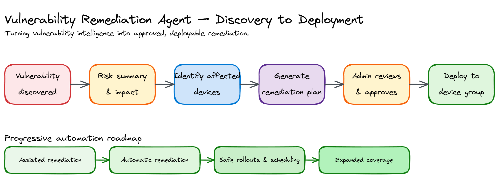
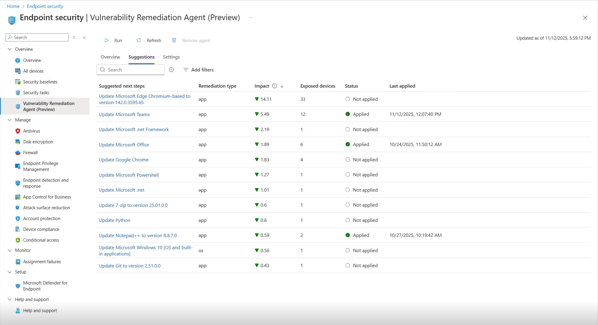
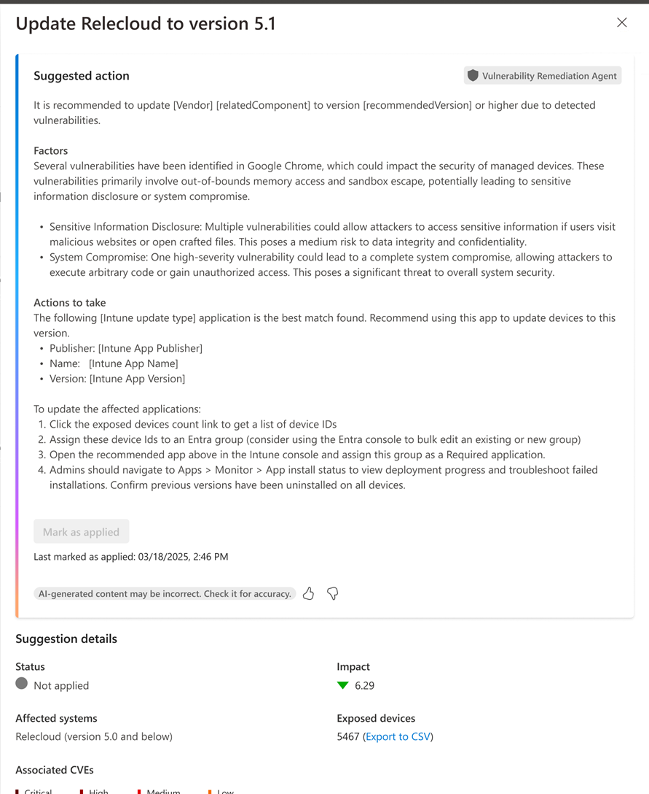
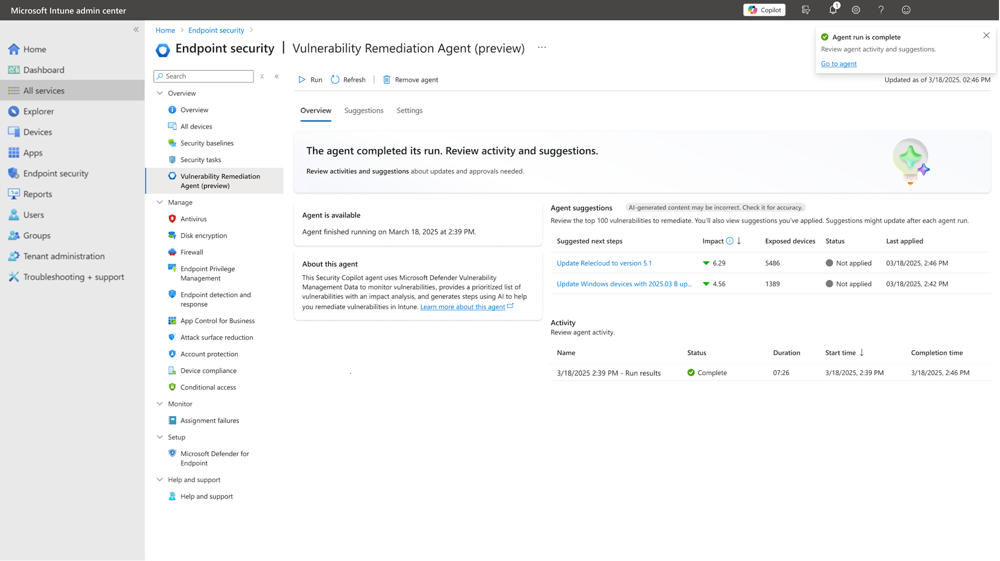
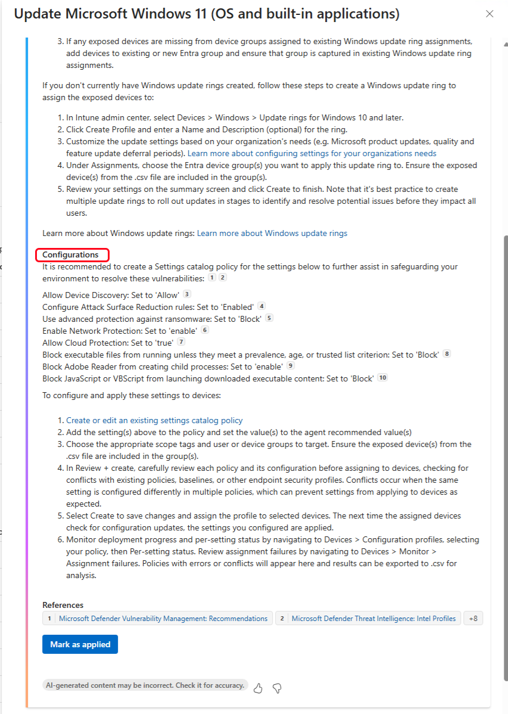

CVE Vulnerability Remediation Agent
Lead UX · Public Preview → GA planning · Flagship agent example
Security teams found problems; IT teams manually translated them into fixes — slow, fragmented, coordination-heavy.
The agent converts vulnerability intelligence into remediation plans, ready for administrator review and approval.
Problem
A single CVE requires understanding risk, identifying affected devices, creating deployment groups, choosing a strategy, and deploying — usually stitched together by hand across security and IT teams.
My Role
Lead UX for the Vulnerability Remediation Agent — design owner across Public Preview and GA planning, applying the permissions, output, and RAI framework established above to a specific, high-stakes scenario. Led the Intune agent demo for the first public showcase of Security Copilot Agents to the press (RSA).
Considerations
- Customer needs — security and IT teams needed a faster path from “here’s a CVE” to “here’s what to do about it,” without losing the ability to review and control what actually deploys.
- Business objectives — prove out the agent framework on a concrete, high-value scenario; establish credibility for Intune’s agentic-AI direction with a flagship example.
- Technical constraints — CVE remediation spans risk assessment, device targeting, and deployment — each with different data sources and different levels of automation that could safely be offered at MVP.





Shipped feature, published by Microsoft — learn.microsoft.com. Shown as reference for the shipped experience; my contribution is the interaction design and flows, not the raw pixels.